ภาพรวมบทนี้ บทนี้ว่าด้วยการทำให้ CPU ทำงานได้มากขึ้นด้วยเทคนิค pipelining คือแบ่งการทำงานของคำสั่งเป็น 5 stage แล้วให้หลายคำสั่งทำงาน ซ้อนเหลื่อมกัน แบบสายพานการผลิต
แต่การซ้อนกันทำให้เกิด hazards 3 แบบ คือ structure, data และ control บทนี้จึงสอนวิธีแก้แต่ละแบบ:
- forwarding
- stall / bubble
- code scheduling
- branch prediction
- ย้ายการตัดสิน branch มาไว้ที่ ID
ต้องใช้พื้นจาก Chapter 03 (คำสั่ง RISC-V:
ld,sd,add,beq) และ Chapter 01 (performance)
1. Course Outline
บทนี้คือหัวข้อ computing units — Pipelining ในรายการหัวข้อของวิชา:
- The structure and architecture of the computer systems
- basic components of computers
- data representations
- the Assembly Language
- memory system organization
- the memory hierarchy; the cache memory
- input and output systems
- storage systems
- computing units — Pipelining ← บทนี้
- the multiprocessor architecture
2. Pipelining Analogy ⭐
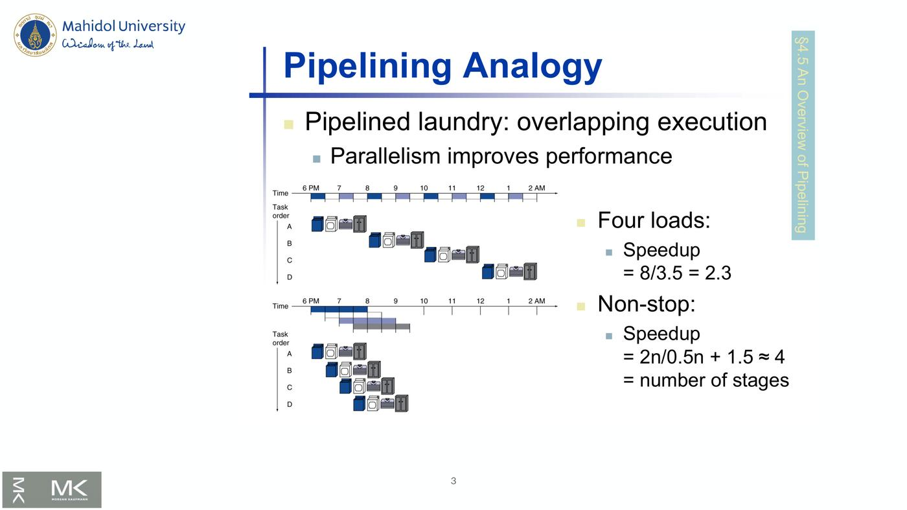
Pipelined laundry: overlapping execution — ซักผ้าแบบให้งานซ้อนเหลื่อมกัน
- Parallelism improves performance — ทำงานขนานกันจึงเร็วขึ้น
- การซักผ้าแบ่งเป็น 4 ขั้น: ซัก → อบ → พับ → เก็บ (ตัวอย่างในตำรา)
- แบบไม่ใช้ pipeline: ทำตะกร้า A ให้ครบ 4 ขั้นก่อน แล้วค่อยเริ่มตะกร้า B
- แบบ pipeline: A ย้ายไปเครื่องอบเมื่อไหร่ ก็เอา B ใส่เครื่องซักได้ทันที
| กรณี | Speedup |
|---|---|
| Four loads (ผ้า 4 ตะกร้า) | 8 / 3.5 = 2.3 |
| Non-stop (มีผ้ามาเรื่อย ๆ n ตะกร้า) | 2n / (0.5n + 1.5) ≈ 4 = number of stages |
💡 Pipeline ไม่ได้ทำให้ตะกร้าเดียวเสร็จเร็วขึ้น แต่ทำให้ เสร็จต่อชั่วโมงได้มากขึ้น (throughput)
ถ้างานยาวต่อเนื่อง speedup จะเข้าใกล้ จำนวน stage
3. RISC-V Pipeline ⭐⭐
Five stages, one step per stage — 5 stage แต่ละ stage ทำหนึ่งขั้น:
| # | Stage | ทำอะไร |
|---|---|---|
| 1 | IF | Instruction fetch from memory — ดึงคำสั่งจาก memory |
| 2 | ID | Instruction decode & register read — ถอดรหัสคำสั่งและอ่านค่า register |
| 3 | EX | Execute operation or calculate address — คำนวณผล หรือคำนวณ address |
| 4 | MEM | Access memory operand — อ่านหรือเขียน data memory |
| 5 | WB | Write result back to register — เขียนผลกลับลง register |
4. Pipeline Performance ⭐⭐
4.1 เวลาของแต่ละ stage
- Assume:
- register read หรือ write ใช้ 100ps
- stage อื่นใช้ 200ps
- เทียบ pipelined datapath กับ single-cycle datapath
| Instr | Instr fetch | Register read | ALU op | Memory access | Register write | Total time |
|---|---|---|---|---|---|---|
| ld | 200ps | 100 ps | 200ps | 200ps | 100 ps | 800ps |
| sd | 200ps | 100 ps | 200ps | 200ps | – | 700ps |
| R-format | 200ps | 100 ps | 200ps | – | 100 ps | 600ps |
| beq | 200ps | 100 ps | 200ps | – | – | 500ps |
💡 อธิบายช่องว่างในตาราง:
- sd ไม่เขียน register
- R-format ไม่ใช้ memory
- beq ไม่ใช้ทั้ง memory และไม่เขียน register
4.2 Single-cycle vs Pipelined
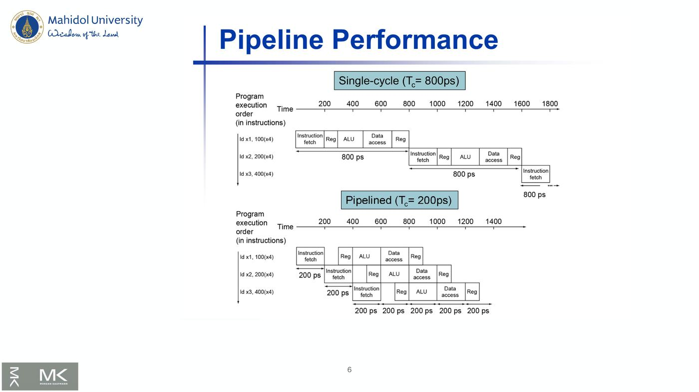
| Single-cycle | Pipelined | |
|---|---|---|
| Tc (clock cycle) | 800ps (ต้องพอกับคำสั่งที่ช้าที่สุดคือ ld) |
200ps (ต้องพอกับ stage ที่ช้าที่สุด) |
| ระยะห่างระหว่างคำสั่ง (ตามภาพ) | 800 ps | 200 ps |
- ในภาพ ถ้ารัน
ld3 คำสั่ง:- single-cycle: เริ่มคำสั่งใหม่ทุก 800ps
- pipelined: เริ่มคำสั่งใหม่ทุก 200ps
- speedup ตามอุดมคติ = 800/200 = 4 เท่า
- แต่ ไม่ถึง 5 เท่า (จำนวน stage) เพราะ stage แต่ละอันใช้เวลาไม่เท่ากัน (คำอธิบายเสริมจากตำรา)
⚠️ Pipeline เพิ่ม throughput แต่ไม่ลดเวลาของคำสั่งแต่ละคำสั่ง (latency)
ในแบบ pipelined คำสั่งหนึ่งใช้ 5 × 200 = 1000ps ซึ่ง นานกว่า 800ps ของ single-cycle ด้วยซ้ำ
5. Pipelining and ISA Design ⭐
RISC-V ISA ถูกออกแบบมาให้ทำ pipeline ได้ง่าย:
| คุณสมบัติของ ISA | ช่วย pipeline อย่างไร |
|---|---|
| ทุกคำสั่งยาว 32 บิต | fetch และ decode ได้ใน 1 cycle ง่ายกว่า — เทียบกับ x86 ที่คำสั่งยาว 1 ถึง 17 bytes |
| รูปแบบคำสั่งมีน้อยและสม่ำเสมอ | decode และอ่าน register ได้ในขั้นเดียว |
| Load/store addressing | คำนวณ address ได้ใน stage 3 และ เข้าถึง memory ใน stage 4 |
6. Hazards ⭐⭐
6.1 Hazards คืออะไร
สถานการณ์ที่ทำให้เริ่มคำสั่งถัดไปใน cycle ถัดไปไม่ได้ แบ่งเป็น 3 แบบ:
| Hazard | สาเหตุ |
|---|---|
| Structure hazards | ทรัพยากรที่ต้องใช้ไม่ว่าง |
| Data hazard | ต้องรอคำสั่งก่อนหน้าอ่านหรือเขียนข้อมูลให้เสร็จก่อน |
| Control hazard | การตัดสินใจว่าจะทำอะไรต่อ ขึ้นกับผลของคำสั่งก่อนหน้า |
💡 เทียบกับการซักผ้า:
- Structure = มีเครื่องเดียวทั้งซักและอบ
- Data = ต้องรอผ้าตัวก่อนหน้าเสร็จก่อนถึงจะจับคู่ถุงเท้าได้
- Control = ต้องรอดูว่าผ้าสะอาดหรือยัง ก่อนตัดสินใจว่าจะซักซ้ำไหม
6.2 Structure Hazards
- แย่งกันใช้ทรัพยากร
- ใน RISC-V pipeline ที่มี memory เดียว:
- load/store ต้องเข้าถึง data memory
- instruction fetch ต้องหยุด (stall) ใน cycle นั้น
- ทำให้เกิด pipeline "bubble" (ช่องว่างใน pipeline)
- ดังนั้น pipelined datapath ต้องแยก instruction memory กับ data memory
- หรือแยก instruction cache กับ data cache (เชื่อมกับ split cache ใน Chapter 04)
6.3 Data Hazards
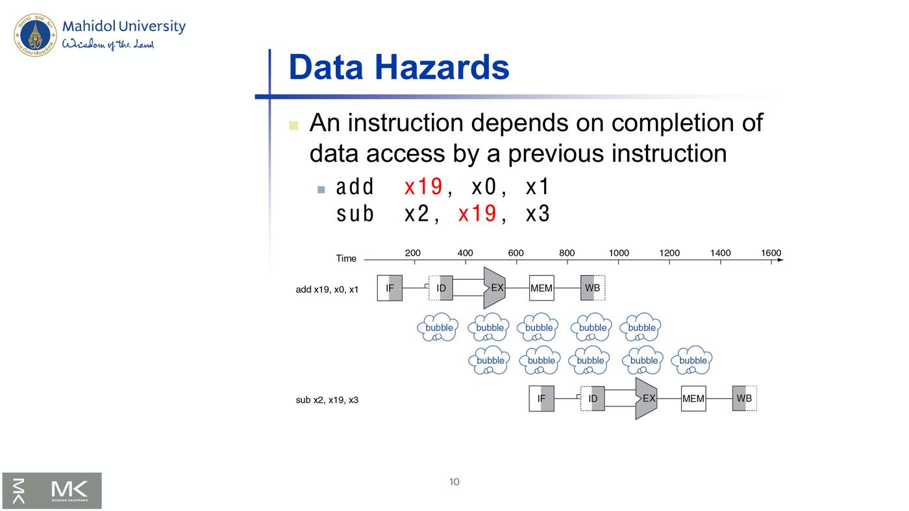
- คำสั่งหนึ่งต้องรอให้คำสั่งก่อนหน้าเข้าถึงข้อมูลเสร็จ
- ตัวอย่าง:
add x19, x0, x1
sub x2, x19, x3
subต้องใช้ x19 แต่addยัง ไม่ได้เขียน x19 (จะเขียนตอน WB ซึ่งอยู่อีกหลาย cycle ต่อมา)
6.4 Forwarding (aka Bypassing) ⭐
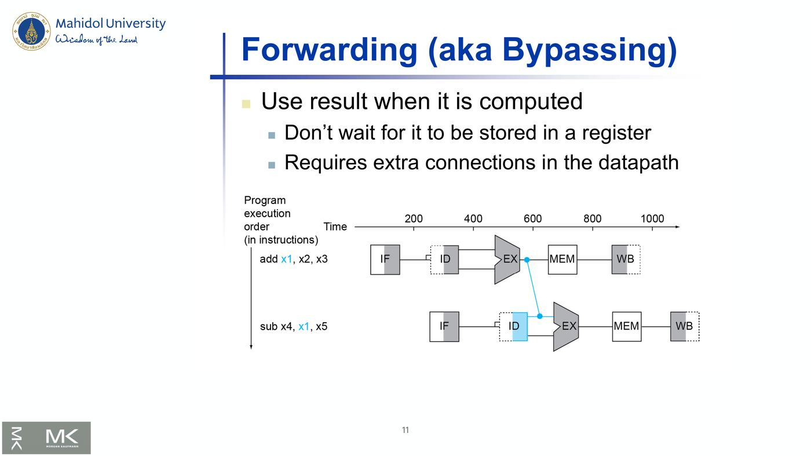
- ใช้ผลลัพธ์ทันทีที่คำนวณเสร็จ
- ไม่ต้องรอให้เก็บลง register ก่อน
- ต้องเพิ่มเส้นทางเชื่อมใน datapath
💡 เหมือนเพื่อนบอกคำตอบให้ทันทีที่คิดออก ไม่ต้องรอให้จดลงสมุดก่อน
6.5 Load-Use Data Hazard
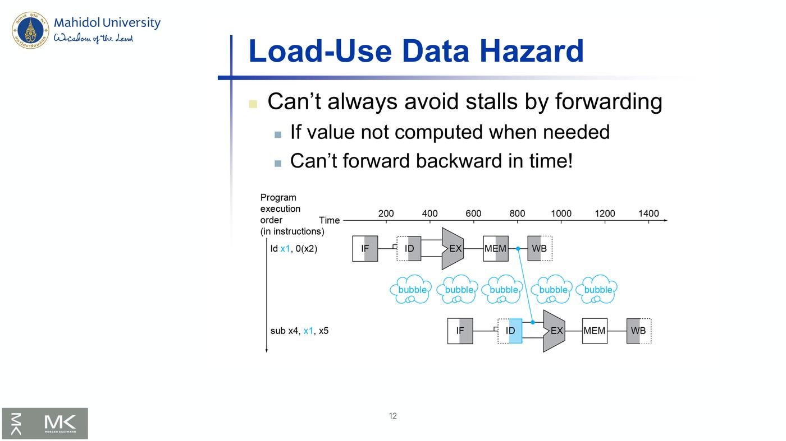
- forwarding ไม่ได้ช่วยให้เลี่ยง stall ได้ทุกกรณี
- ถ้าค่ายังคำนวณไม่เสร็จตอนที่ต้องใช้
- ส่งย้อนเวลากลับไปไม่ได้! (Can't forward backward in time!)
- สาเหตุ:
ldได้ค่าตอน ปลาย MEM แต่คำสั่งถัดไปต้องใช้ค่าตอน ต้น EX ซึ่งเป็นเวลาเดียวกัน (คำอธิบายเสริม)
6.6 Code Scheduling to Avoid Stalls ⭐
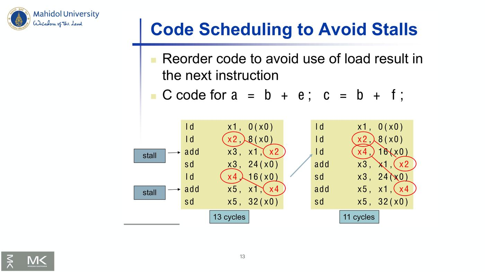
- เรียงโค้ดใหม่ ไม่ให้ใช้ผลของ load ในคำสั่งถัดไปทันที
- C code:
a = b + e; c = b + f;
| โค้ดเดิม (13 cycles) | โค้ดที่เรียงใหม่ (11 cycles) |
|---|---|
ld x1, 0(x0) |
ld x1, 0(x0) |
ld x2, 8(x0) |
ld x2, 8(x0) |
stall → add x3, x1, x2 |
ld x4, 16(x0) ← ย้ายขึ้นมา |
sd x3, 24(x0) |
add x3, x1, x2 |
ld x4, 16(x0) |
sd x3, 24(x0) |
stall → add x5, x1, x4 |
add x5, x1, x4 |
sd x5, 32(x0) |
sd x5, 32(x0) |
- โค้ดเดิม:
add x3ใช้ x2 ทันทีหลังld x2และadd x5ใช้ x4 ทันทีหลังld x4→ stall 2 ครั้ง - โค้ดใหม่: ย้าย
ld x4ขึ้นไปก่อนaddจะเหลือแค่ load-use ที่ ห่างกันอย่างน้อย 1 คำสั่ง ซึ่งแก้ด้วย forwarding ได้ → ไม่มี stall
💡 นับ cycle: 7 คำสั่ง ใน pipeline 5 stage = 5 + (7 − 1) = 11 cycles; ถ้ามี stall 2 ครั้ง = 13 cycles
6.7 Control Hazards
- branch เป็นตัวกำหนดว่าจะทำคำสั่งไหนต่อ
- การ fetch คำสั่งถัดไปขึ้นกับผลของ branch
- pipeline จึง fetch คำสั่งที่ถูกต้องไม่ได้เสมอไป
- เพราะ branch ยังอยู่ที่ ID stage
- ใน RISC-V pipeline:
- ต้องเปรียบเทียบ register และคำนวณ target ตั้งแต่ต้น pipeline
- เพิ่ม hardware ให้ทำสิ่งนี้ได้ใน ID stage
6.8 Stall on Branch
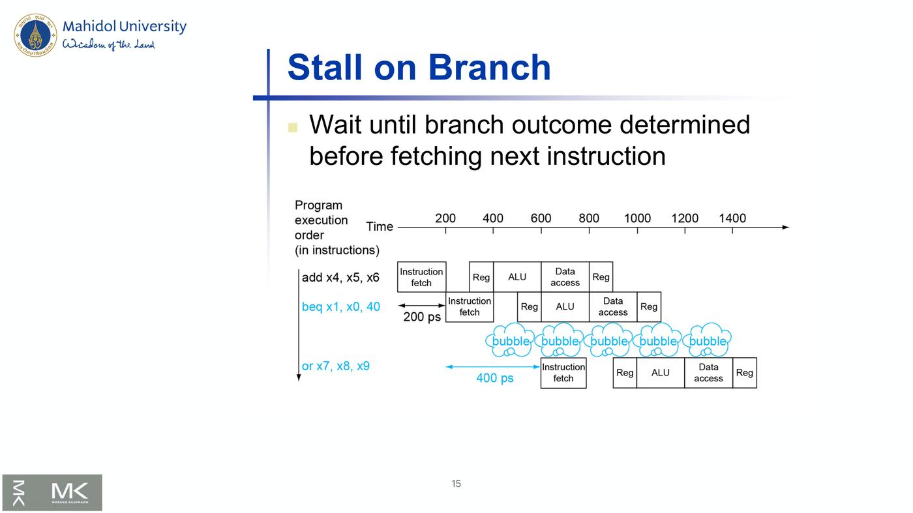
- รอจนรู้ผลของ branch แล้วค่อย fetch คำสั่งถัดไป
- ในภาพ:
add x4, x5, x6beq x1, x0, 40- มี bubble คั่นอยู่
or x7, x8, x9ถูก fetch ช้าไป 400 ps แทนที่จะเป็น 200 ps → เสียไป 1 cycle
6.9 Branch Prediction
- pipeline ที่ยาวกว่านี้รู้ผลของ branch เร็ว ๆ ไม่ได้
- stall penalty จึงสูงจนรับไม่ได้
- ทางแก้: เดาผลของ branch
- stall เฉพาะตอนที่เดาผิด
- ใน RISC-V pipeline:
- เดาว่า branch ไม่กระโดด (not taken)
- fetch คำสั่งถัดจาก branch ได้เลย ไม่ต้องรอ
6.10 More-Realistic Branch Prediction ⭐
| แบบ | วิธี | ตัวอย่าง |
|---|---|---|
| Static branch prediction | ดูจากพฤติกรรมทั่วไปของ branch | branch ของ loop และ if-statement: backward branch ให้เดาว่า taken, forward branch ให้เดาว่า not taken |
| Dynamic branch prediction | hardware วัดพฤติกรรมจริงของ branch เช่น เก็บประวัติล่าสุดของแต่ละ branch แล้ว ถือว่าอนาคตจะเป็นไปตามแนวโน้มเดิม | ถ้าเดาผิด: stall ระหว่าง fetch ใหม่ แล้ว อัปเดตประวัติ |
💡 ทำไม backward branch ควรเดาว่า taken? เพราะ branch ที่กระโดดย้อนกลับมักเป็น ท้าย loop ซึ่งวนซ้ำหลายรอบก่อนจะออก
7. Pipeline Summary (The BIG Picture) ⭐
- pipelining เพิ่มประสิทธิภาพด้วยการเพิ่ม instruction throughput
- ทำหลายคำสั่งพร้อมกัน
- แต่ละคำสั่งยังมี latency เท่าเดิม
- มี hazards: structure, data, control
- การออกแบบ instruction set มีผลต่อความซับซ้อน ของการทำ pipeline
8. RISC-V Pipelined Datapath และ Pipeline Registers
8.1 RISC-V Pipelined Datapath
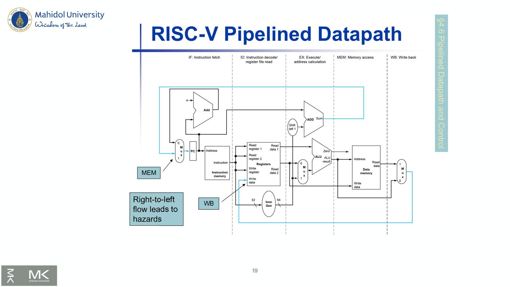
- ข้อมูลส่วนใหญ่ไหลจาก ซ้ายไปขวา (IF → WB)
- การไหลจากขวาไปซ้ายทำให้เกิด hazards (Right-to-left flow leads to hazards) ซึ่งมี 2 จุด:
- WB: เขียนผลกลับไปที่ register ใน ID → data hazard
- MEM: ส่งผล branch กลับไปเลือก PC ที่ IF → control hazard
8.2 Pipeline Registers
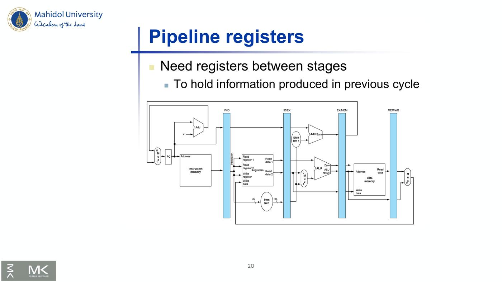
- ต้องมี register คั่นระหว่าง stage
- เก็บข้อมูลที่ stage ก่อนหน้าสร้างไว้ใน cycle ที่แล้ว
- ชื่อ register ตั้งตาม stage สองฝั่ง ที่มันคั่นอยู่:
- IF/ID
- ID/EX
- EX/MEM
- MEM/WB
9. Pipeline Operation: Load และ Store ทีละ Stage
9.1 Pipeline Operation
- ดูการไหลของคำสั่งผ่าน pipelined datapath ทีละ cycle
- "Single-clock-cycle" pipeline diagram
- แสดงการใช้ pipeline ใน cycle เดียว
- ไฮไลต์ทรัพยากรที่ใช้
- เทียบกับ "multi-clock-cycle" diagram — กราฟการทำงานตามเวลา
- ในบทนี้จะดู single-clock-cycle diagram ของ load และ store
9.2 IF for Load, Store, …
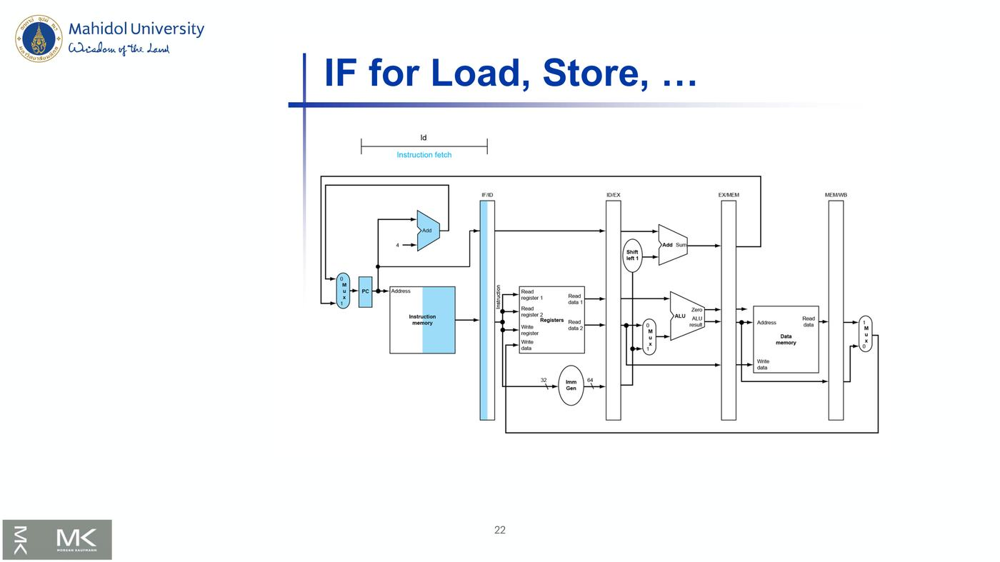
- อ่านคำสั่งจาก instruction memory ตาม PC
- คำนวณ PC + 4
- เก็บคำสั่งและ PC ลง IF/ID register
9.3 ID for Load, Store, …
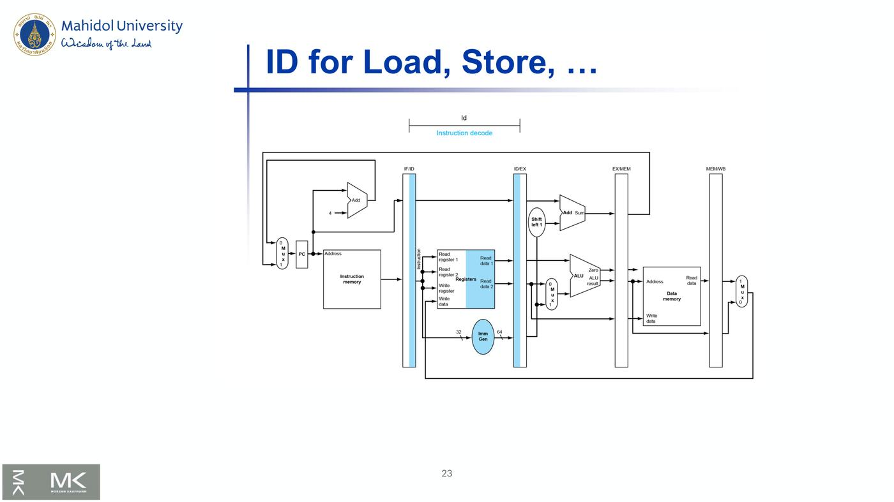
- อ่านค่า register 2 ตัว ตามเลข register ในคำสั่ง
- sign-extend ค่า immediate
- ส่งทั้งหมดต่อไปเก็บที่ ID/EX (รวมค่า PC ด้วย)
9.4 EX for Load
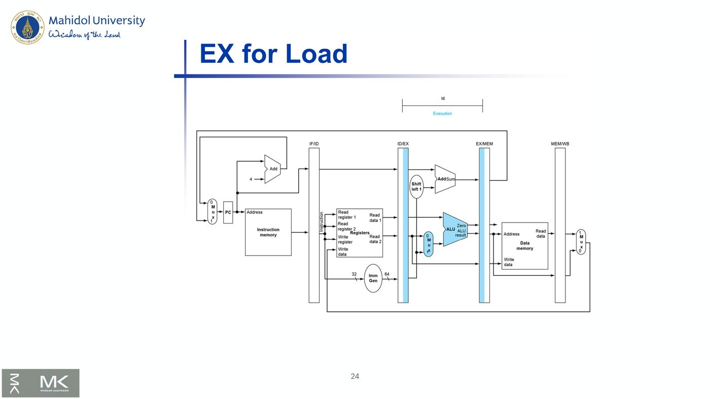
- ALU บวกค่า base register กับ offset ที่ sign-extend แล้ว → ได้ address
- เก็บ address ลง EX/MEM
9.5 MEM for Load
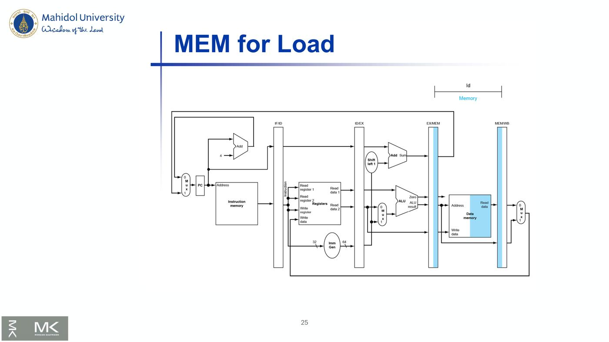
- อ่าน data memory ตาม address
- เก็บค่าที่อ่านได้ลง MEM/WB
9.6 WB for Load — Wrong register number ⚠️
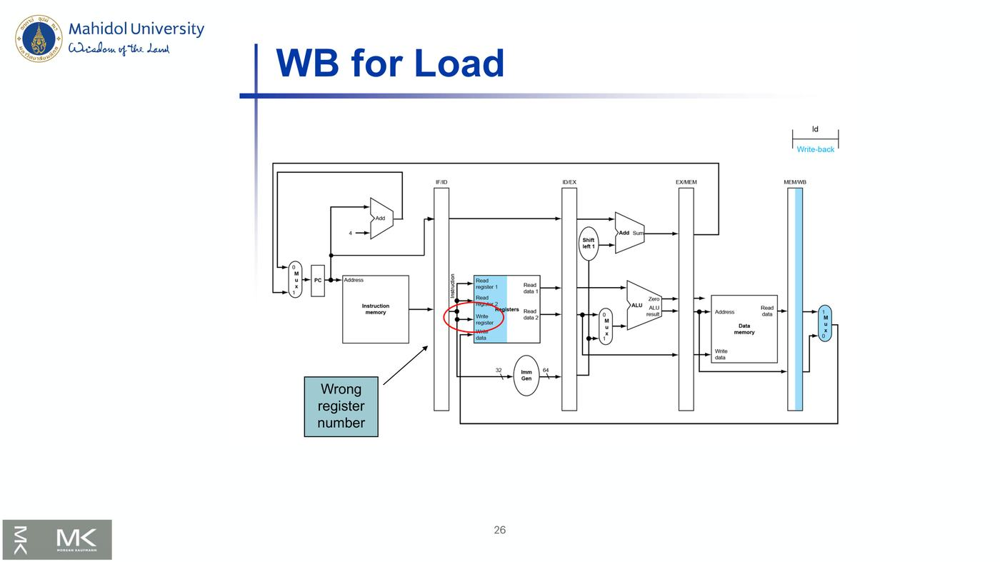
- เขียนค่าที่อ่านได้กลับลง register
- ปัญหา: เลข register ปลายทางที่ใช้มาจาก IF/ID ปัจจุบัน ซึ่งตอนนั้นเป็น คำสั่งอื่นแล้ว → wrong register number
9.7 Corrected Datapath for Load
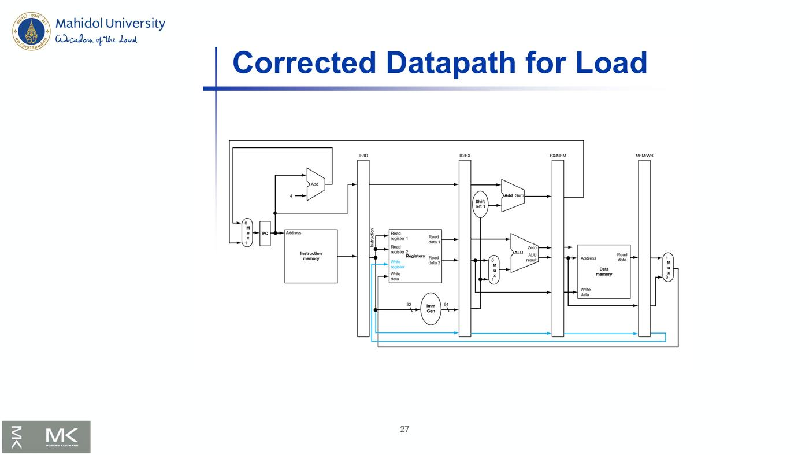
- แก้โดยส่งเลข register ปลายทาง (rd) ตามไปด้วย ผ่าน ID/EX → EX/MEM → MEM/WB
- ตอน WB จึงได้ เลข rd ของคำสั่งเดียวกัน
💡 หลักสำคัญ: ข้อมูลอะไรที่ stage ถัด ๆ ไปต้องใช้ ต้องถูกส่งต่อไปกับ pipeline register ด้วย ไม่อย่างนั้นจะถูกคำสั่งใหม่เขียนทับ
9.8 EX for Store
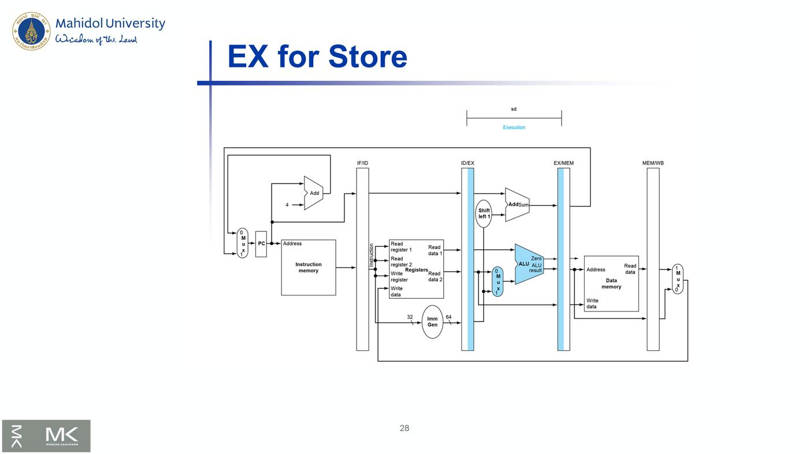
- ALU คำนวณ address (base + offset)
- ส่งค่าจาก register ที่จะเขียน (rs2) ต่อไปที่ EX/MEM ด้วย
9.9 MEM for Store
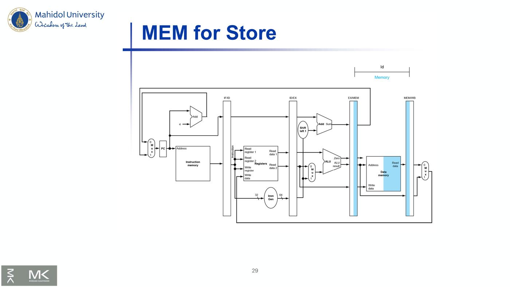
- เขียนข้อมูลลง data memory ตาม address
9.10 WB for Store
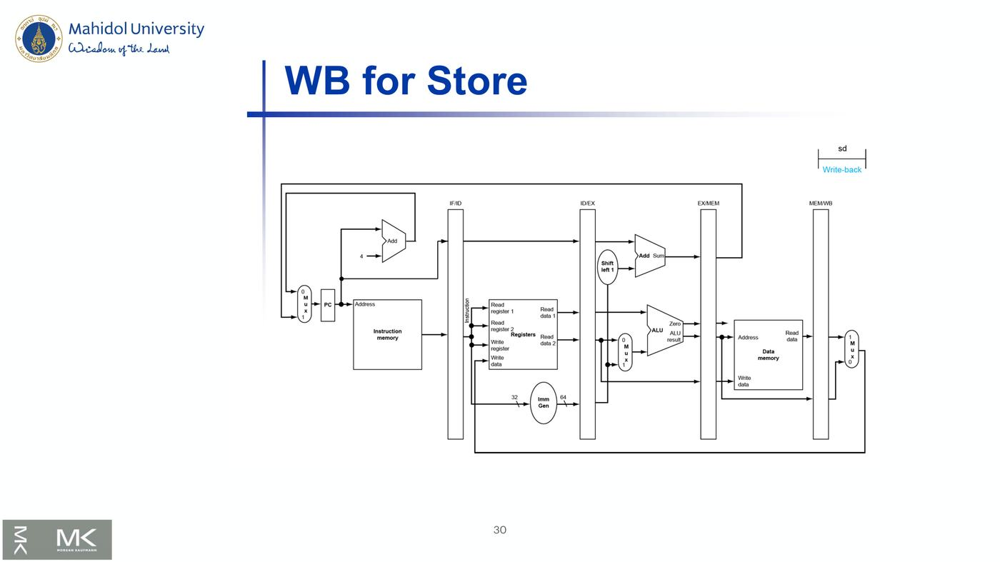
- ไม่มีอะไรต้องทำ เพราะ
sdไม่เขียน register
10. Pipeline Diagrams และ Pipelined Control
10.1 Multi-Cycle Pipeline Diagram — แบบแสดงการใช้ทรัพยากร
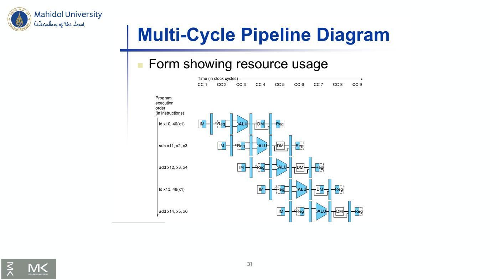
- แสดงการใช้ทรัพยากร ของแต่ละคำสั่งในแต่ละ clock cycle
- IM = Instruction memory
- Reg
- ALU
- DM = Data memory
10.2 Multi-Cycle Pipeline Diagram — แบบดั้งเดิม
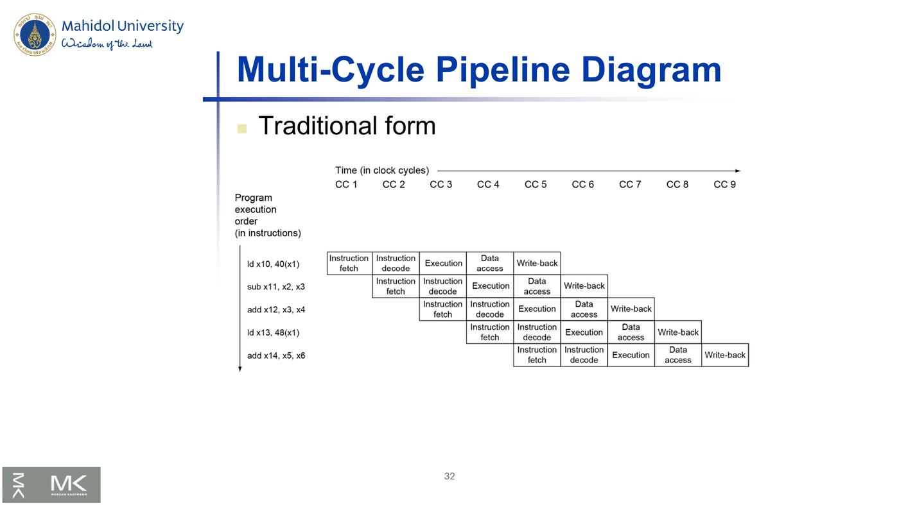
- แบบดั้งเดิม (Traditional form): เขียนชื่อ stage ต่อแถวเรียงตามเวลา เช่น
IF ID EX MEM WB- แถวถัดไปเลื่อนไป 1 cycle
10.3 Single-Cycle Pipeline Diagram
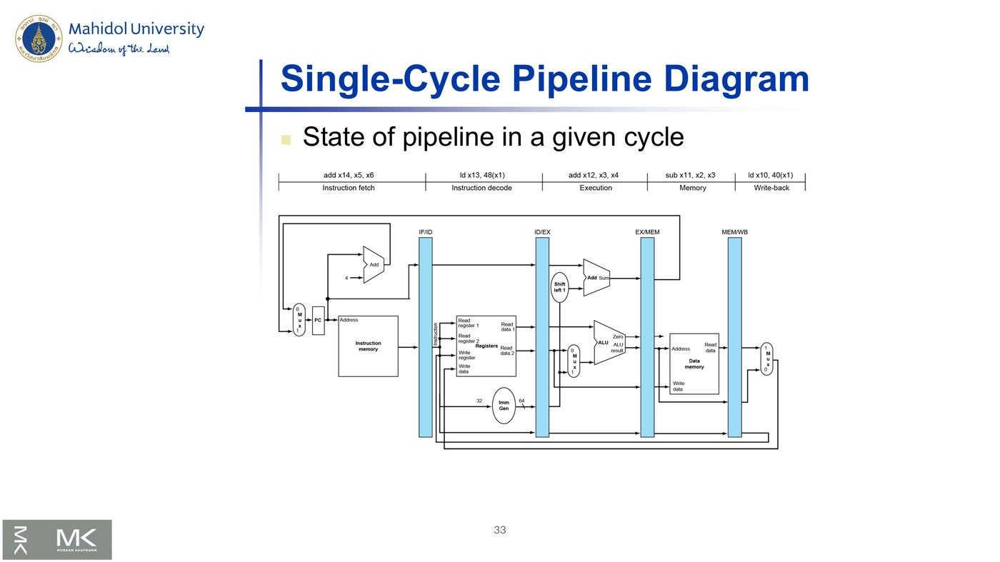
- แสดงสถานะของ pipeline ใน cycle ที่กำหนด
- ในแต่ละ stage มีคำสั่งไหนอยู่
10.4 Pipelined Control (Simplified)
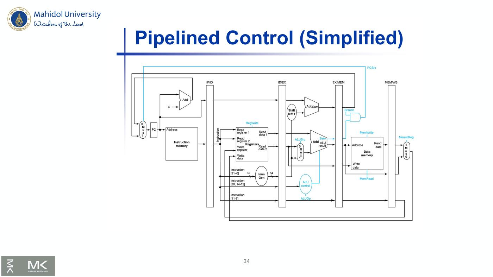
- สัญญาณควบคุมถูกสร้างตอน ID จาก opcode
- แล้วส่งต่อไปกับ pipeline register เพื่อให้ stage ถัด ๆ ไปใช้
- EX: ALUOp, ALUSrc
- MEM: Branch, MemRead, MemWrite
- WB: MemtoReg, RegWrite
11. Data Hazards: Forwarding ⭐⭐
11.1 Data Hazards in ALU Instructions
ดูลำดับคำสั่งนี้:
sub x2, x1, x3
and x12, x2, x5
or x13, x6, x2
add x14, x2, x2
sd x15, 100(x2)
- ทุกคำสั่งหลัง
subใช้ x2 แต่subจะเขียน x2 ตอน WB - แก้ hazards ได้ด้วย forwarding
- แล้วจะรู้ได้อย่างไรว่าเมื่อไหร่ต้อง forward?
11.2 Dependencies & Forwarding
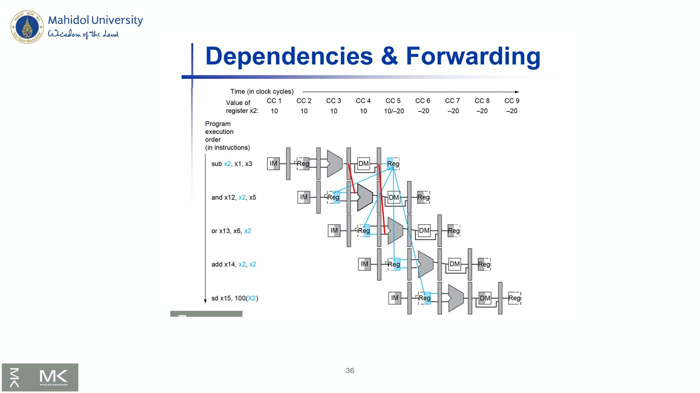
andและorต้องใช้ x2 ก่อน ที่subจะเขียนเสร็จ → เส้นย้อนเวลา → ต้อง forwardaddอยู่ cycle เดียวกับ WB ของsub→ register เขียนครึ่งแรก อ่านครึ่งหลัง จึงได้ค่าถูก (คำอธิบายเสริมจากตำรา)sdมาหลัง WB แล้ว → ไม่มีปัญหา
11.3 Detecting the Need to Forward ⭐
- ส่งเลข register ไปตาม pipeline
- เช่น ID/EX.RegisterRs1 = เลข register ของ Rs1 ที่อยู่ใน ID/EX pipeline register
- เลข register ของ operand ของ ALU ใน EX stage คือ ID/EX.RegisterRs1 และ ID/EX.RegisterRs2
- เกิด data hazard เมื่อ:
| กรณี | เงื่อนไข | forward จาก |
|---|---|---|
| 1a | EX/MEM.RegisterRd = ID/EX.RegisterRs1 | EX/MEM pipeline reg |
| 1b | EX/MEM.RegisterRd = ID/EX.RegisterRs2 | EX/MEM pipeline reg |
| 2a | MEM/WB.RegisterRd = ID/EX.RegisterRs1 | MEM/WB pipeline reg |
| 2b | MEM/WB.RegisterRd = ID/EX.RegisterRs2 | MEM/WB pipeline reg |
- แต่ forward เฉพาะเมื่อคำสั่งที่ส่งค่ามา "เขียน register จริง":
- EX/MEM.RegWrite, MEM/WB.RegWrite ต้องเป็น 1
- และเฉพาะเมื่อ Rd ของคำสั่งนั้นไม่ใช่ x0:
- EX/MEM.RegisterRd ≠ 0
- MEM/WB.RegisterRd ≠ 0
⚠️ ทำไมต้องเช็ก x0? เพราะ x0 มีค่าเป็น 0 เสมอ ถ้าคำสั่งเขียนลง x0 แล้วเรา forward ค่านั้นไป จะได้ค่าผิด
ตัวอย่างจับคู่กับโค้ดใน 11.1 (เสริม)
and x12, x2, x5อยู่ EX ขณะที่subอยู่ MEM → EX/MEM.RegisterRd = x2 = ID/EX.RegisterRs1 → กรณี 1aor x13, x6, x2อยู่ EX ขณะที่subอยู่ WB → MEM/WB.RegisterRd = x2 = ID/EX.RegisterRs2 → กรณี 2b
11.4 Forwarding Paths
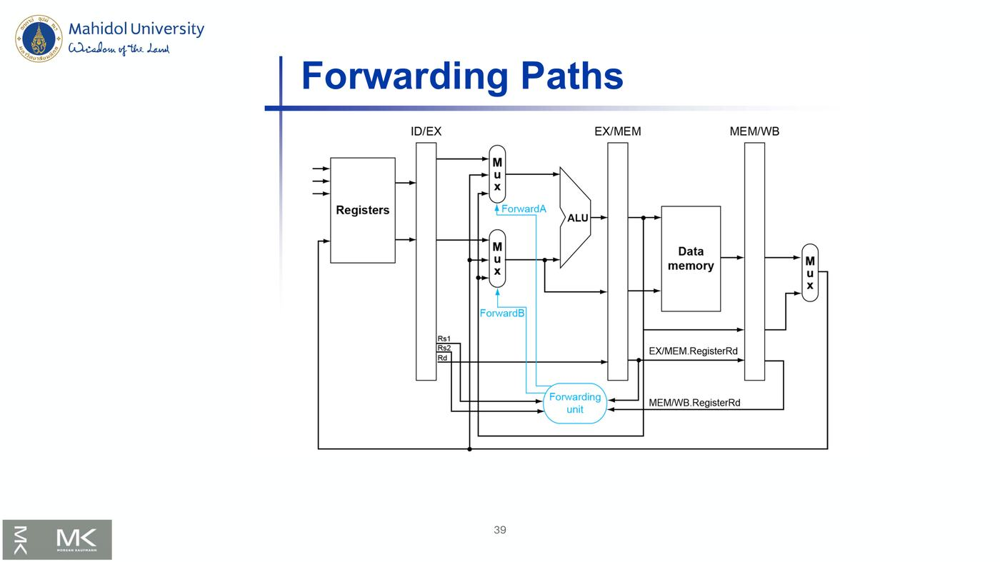
- เพิ่ม Forwarding unit และ mux 2 ตัวหน้า ALU (ForwardA, ForwardB)
- mux เลือกค่าจาก:
- ID/EX (ค่าปกติจาก register)
- EX/MEM (ผล ALU ของคำสั่งก่อนหน้า)
- MEM/WB (ค่าจาก data memory หรือผล ALU ที่เก่ากว่า)
11.5 Forwarding Conditions ⭐
| Mux control | Source | Explanation |
|---|---|---|
| ForwardA = 00 | ID/EX | operand ตัวแรกของ ALU มาจาก register file |
| ForwardA = 10 | EX/MEM | operand ตัวแรก forward มาจากผล ALU ของคำสั่งก่อนหน้า |
| ForwardA = 01 | MEM/WB | operand ตัวแรก forward มาจาก data memory หรือผล ALU ที่เก่ากว่า |
| ForwardB = 00 | ID/EX | operand ตัวที่สอง มาจาก register file |
| ForwardB = 10 | EX/MEM | operand ตัวที่สอง forward มาจากผล ALU ของคำสั่งก่อนหน้า |
| ForwardB = 01 | MEM/WB | operand ตัวที่สอง forward มาจาก data memory หรือผล ALU ที่เก่ากว่า |
💡 จำง่าย ๆ: 10 = ใกล้กว่า (EX/MEM), 01 = ไกลกว่า (MEM/WB), 00 = ไม่ forward
11.6 Double Data Hazard ⭐
ดูลำดับคำสั่งนี้:
add x1, x1, x2
add x1, x1, x3
add x1, x1, x4
- เกิด hazard ทั้งสองแบบพร้อมกัน (EX hazard และ MEM hazard ชี้ไป x1 ทั้งคู่)
- ต้องใช้ค่าล่าสุด คือค่าจากคำสั่งที่ใกล้ที่สุด (EX/MEM)
- ปรับเงื่อนไขของ MEM hazard:
- forward จาก MEM/WB ก็ต่อเมื่อเงื่อนไข EX hazard ไม่เป็นจริง
11.7 Revised Forwarding Condition — MEM hazard
if (MEM/WB.RegWrite
and (MEM/WB.RegisterRd ≠ 0)
and not(EX/MEM.RegWrite and (EX/MEM.RegisterRd ≠ 0)
and (EX/MEM.RegisterRd = ID/EX.RegisterRs1))
and (MEM/WB.RegisterRd = ID/EX.RegisterRs1)) ForwardA = 01
if (MEM/WB.RegWrite
and (MEM/WB.RegisterRd ≠ 0)
and not(EX/MEM.RegWrite and (EX/MEM.RegisterRd ≠ 0)
and (EX/MEM.RegisterRd = ID/EX.RegisterRs2))
and (MEM/WB.RegisterRd = ID/EX.RegisterRs2)) ForwardB = 01
อ่านทีละบรรทัด:
- คำสั่งใน MEM/WB เขียน register จริง
- rd ของคำสั่งนั้น ไม่ใช่ x0
- ไม่มี EX hazard ที่ชี้ไป register เดียวกัน (ถ้ามี ให้ EX/MEM ชนะ)
- rd ตรงกับ Rs1 (หรือ Rs2) ของคำสั่งใน EX → ถ้าครบทั้ง 4 ข้อ ให้ forward จาก MEM/WB (01)
⚠️ ในสไลด์ข้อความดึงมาอาจเห็นเครื่องหมาย ≠ หายไป เงื่อนไขในวงเล็บ
not(...)ที่ถูกต้องคือ EX/MEM.RegisterRd = ID/EX.RegisterRs1 (ตรงกัน) ตามตำรา
11.8 Datapath with Forwarding
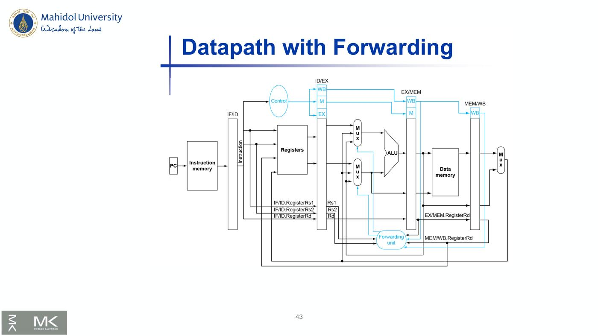
- Forwarding unit รับ:
- Rs1, Rs2 จาก ID/EX
- Rd และ RegWrite จาก EX/MEM และ MEM/WB
- จากนั้นควบคุม mux ForwardA/ForwardB หน้า ALU
12. Load-Use Hazard Detection และ Stalling ⭐⭐
12.1 Load-Use Hazard Detection
- ตรวจตอนที่คำสั่งที่ใช้ค่า ถูก decode อยู่ใน ID stage
- เลข register ของ operand ใน ID stage คือ IF/ID.RegisterRs1, IF/ID.RegisterRs2
- เกิด load-use hazard เมื่อ:
ID/EX.MemRead and
((ID/EX.RegisterRd = IF/ID.RegisterRs1) or
(ID/EX.RegisterRd = IF/ID.RegisterRs2))
- ถ้าตรวจพบ → stall และแทรก bubble
⚠️ ในสไลด์เขียน IF/ID.RegisterRs1 ซ้ำสองครั้ง แต่วงเล็บที่สองที่ถูกต้องคือ Rs2
- ID/EX.MemRead = 1 แปลว่าคำสั่งใน EX เป็น
ld
12.2 How to Stall the Pipeline ⭐
- บังคับสัญญาณควบคุมใน ID/EX register ให้เป็น 0
- EX, MEM และ WB จะทำ nop (no-operation) → กลายเป็น bubble
- ไม่ให้อัปเดต PC และ IF/ID register
- คำสั่งที่ใช้ค่าจะถูก decode ซ้ำ
- คำสั่งถัดไปจะถูก fetch ซ้ำ
- stall 1 cycle ทำให้ MEM อ่านข้อมูลของ
ldได้ทัน- จากนั้น forward ไปยัง EX stage ได้
12.3 Load-Use Data Hazard (ภาพ)
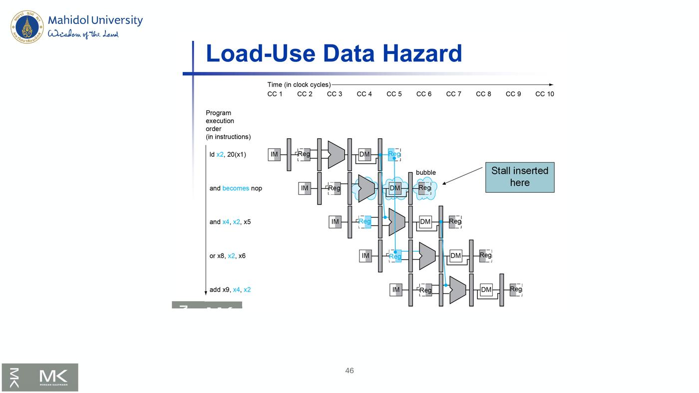
- Stall inserted here — แทรก bubble ระหว่าง
ldกับคำสั่งที่ใช้ค่า - คำสั่งที่เหลือ เลื่อนไป 1 cycle
12.4 Datapath with Hazard Detection
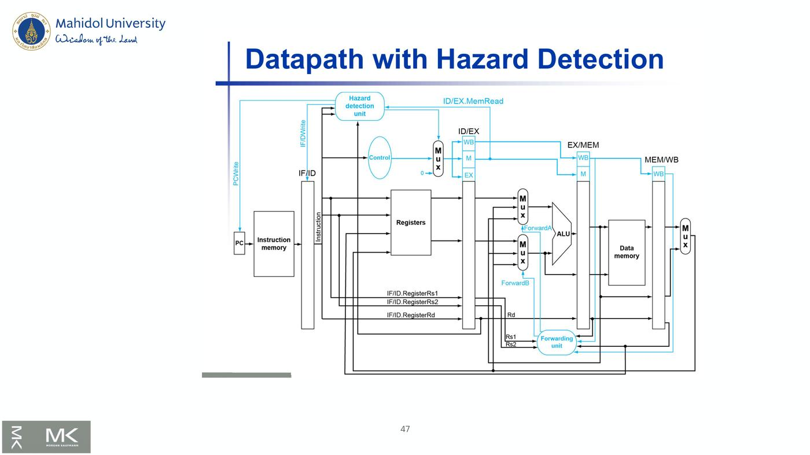
- เพิ่ม Hazard detection unit ที่ ID stage ซึ่ง:
- รับ ID/EX.MemRead, ID/EX.RegisterRd, IF/ID.RegisterRs1/Rs2
- ส่งสัญญาณ PCWrite และ IF/IDWrite เพื่อหยุดการอัปเดต
- ควบคุม mux ที่เลือกสัญญาณควบคุมเป็น 0 (แทรก bubble)
12.5 Stalls and Performance (The BIG Picture)
- stall ทำให้ประสิทธิภาพลดลง
- แต่จำเป็น เพื่อให้ได้ผลลัพธ์ที่ถูกต้อง
- compiler จัดเรียงโค้ดเพื่อเลี่ยง hazard และ stall ได้ (เช่นตัวอย่าง 6.6)
- ต้องรู้โครงสร้างของ pipeline
13. Control Hazards: Branch Hazards ⭐⭐
13.1 Branch Hazards
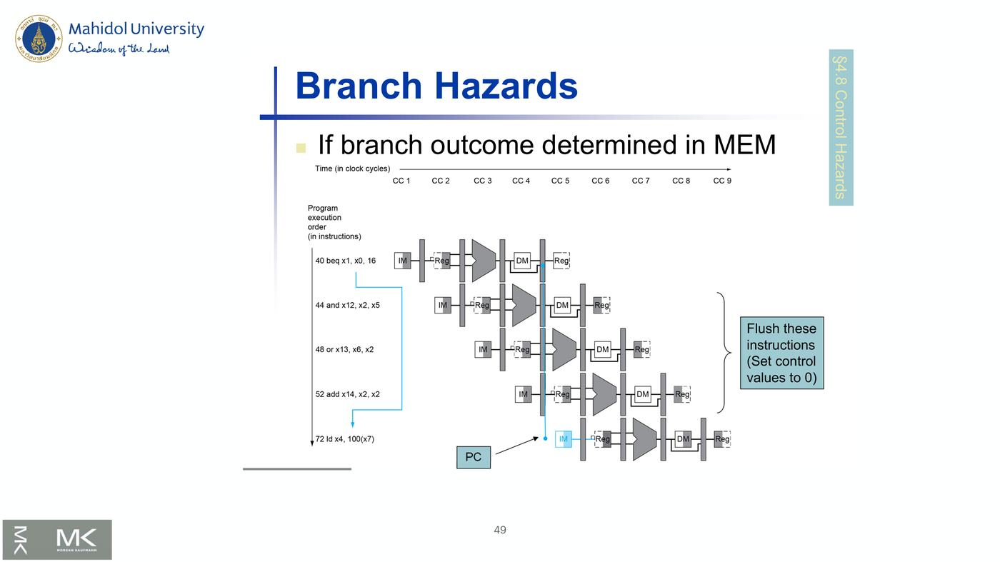
- ถ้ารู้ผลของ branch ตอน MEM stage:
- ตอนนั้น pipeline fetch คำสั่งถัดไปมาแล้ว 3 คำสั่ง
- ในภาพ:
40 beq x1, x0, 16ตามด้วย44 and,48 or,52 add
- ถ้า branch taken → Flush these instructions (Set control values to 0)
- แล้ว PC ไปที่
72 ld x4, 100(x7)
13.2 Reducing Branch Delay ⭐
- ย้าย hardware ที่ตัดสินผลของ branch มาไว้ที่ ID stage:
- Target address adder — บวกหา address ปลายทาง
- Register comparator — เปรียบเทียบ register
- ตัวอย่าง: branch taken
36: sub x10, x4, x8
40: beq x1, x3, 16 // PC-relative branch
// to 40+16*2=72
44: and x12, x2, x5
48: or x13, x2, x6
52: add x14, x4, x2
56: sub x15, x6, x7
...
72: ld x4, 50(x7)
- target = 40 + 16 × 2 = 72
- offset ของ branch ใน RISC-V คูณ 2 (หน่วยครึ่ง word) (เชื่อมกับ SB-format ใน Chapter 03)
⚠️ ในสไลด์บรรทัด 48 เขียน
orrซึ่งน่าจะหมายถึงor
13.3 Example: Branch Taken (Clock 3)
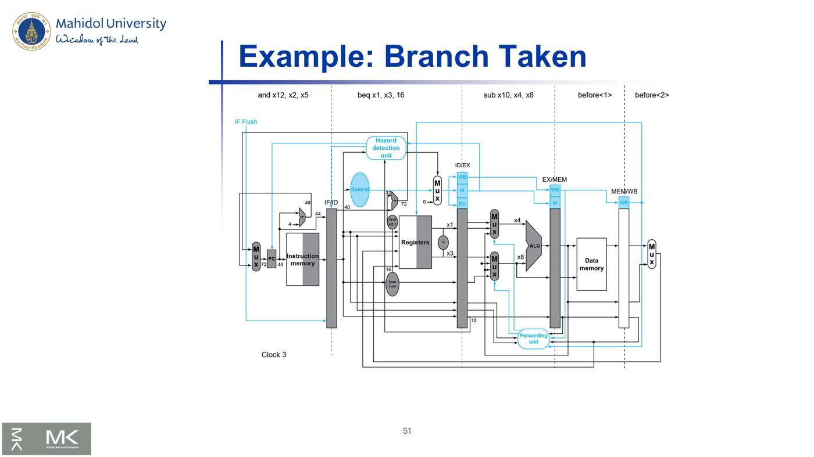
- Clock 3:
and x12, x2, x5อยู่ IFbeq x1, x3, 16อยู่ IDsub x10, x4, x8อยู่ EX
- ที่ ID:
- comparator พบว่า x1 = x3 → branch taken
- adder คำนวณ target 72
- สัญญาณ IF.Flush ถูกยกขึ้น เพื่อล้างคำสั่ง
andที่ fetch มาผิด
13.4 Example: Branch Taken (Clock 4)
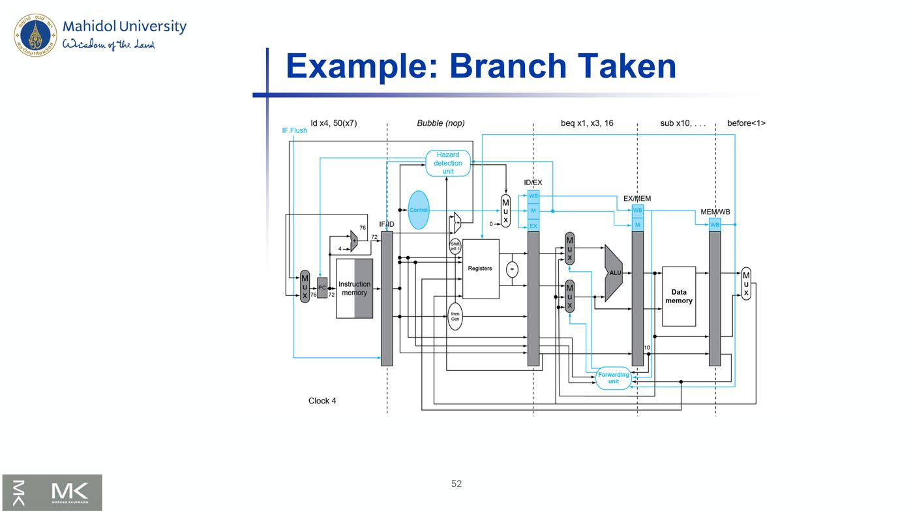
- Clock 4:
ld x4, 50(x7)อยู่ IF (fetch จาก 72)- Bubble (nop) อยู่ ID (แทน
andที่ถูก flush) beq x1, x3, 16อยู่ EXsub x10, ...อยู่ MEM
- เสียไปแค่ 1 cycle (เทียบกับ 3 cycles ถ้าตัดสินที่ MEM)
Q & A (สไลด์สุดท้าย)
14. คำศัพท์สำคัญ
| คำศัพท์ | ความหมาย | จำง่าย ๆ ว่า |
|---|---|---|
| Pipelining | แบ่งคำสั่งเป็น stage แล้วให้ทำงานซ้อนเหลื่อมกัน | ซักผ้าหลายตะกร้า |
| Throughput / Latency | งานต่อหน่วยเวลา / เวลาต่อคำสั่ง | pipeline เพิ่มอย่างแรก ไม่ลดอย่างหลัง |
| IF / ID / EX / MEM / WB | fetch / decode + read reg / execute / memory / write back | |
| Tc | clock cycle time | 800ps vs 200ps |
| Hazard | สิ่งที่ทำให้เริ่มคำสั่งถัดไปใน cycle ถัดไปไม่ได้ | |
| Structure hazard | แย่งทรัพยากร | แยก instruction/data memory |
| Data hazard | ต้องรอข้อมูลจากคำสั่งก่อน | forwarding |
| Control hazard | ต้องรอผล branch | prediction |
| Bubble / nop | ช่องว่างใน pipeline | |
| Stall | หยุดรอ | |
| Forwarding (bypassing) | ส่งผลลัพธ์ไปใช้ก่อนเขียนลง register | บอกคำตอบทันที |
| Load-use hazard | ใช้ค่าจาก ld ในคำสั่งถัดไปทันที |
forward ย้อนเวลาไม่ได้ |
| Code scheduling | เรียงโค้ดใหม่เลี่ยง stall | 13 → 11 cycles |
| Branch prediction (static / dynamic) | เดาตามพฤติกรรมทั่วไป / ตามประวัติจริง | |
| Backward taken / Forward not taken | กฎของ static prediction | loop |
| Pipeline register | IF/ID, ID/EX, EX/MEM, MEM/WB | |
| Single-clock-cycle diagram | สถานะใน cycle เดียว | |
| Multi-clock-cycle diagram | การทำงานตามเวลา | |
| Forwarding unit | ตัดสินใจ forward, ควบคุม ForwardA/B | |
| ForwardA/B = 00/10/01 | ID/EX / EX/MEM / MEM/WB | |
| Double data hazard | EX และ MEM hazard พร้อมกัน ใช้ค่าล่าสุด | |
| Hazard detection unit | ตรวจ load-use แล้ว stall | |
| PCWrite, IF/IDWrite | สัญญาณหยุดอัปเดต | |
| Flush | ล้างคำสั่งที่ fetch ผิด (control = 0) | |
| Target address adder / Register comparator | hardware ตัดสิน branch ที่ ID |
15. สรุปท้ายบท / จุดที่มักออกสอบ
เรื่องที่ต้องจำ
- Laundry speedup: 4 loads = 8/3.5 = 2.3; non-stop ≈ จำนวน stage (4)
- 5 stages: IF, ID, EX, MEM, WB และหน้าที่ของแต่ละ stage
- ตารางเวลา: ld 800, sd 700, R-format 600, beq 500 ps → single-cycle Tc = 800ps, pipelined Tc = 200ps
- pipeline เพิ่ม throughput ไม่ลด latency
- RISC-V เหมาะกับ pipeline เพราะ 3 ข้อ:
- คำสั่งยาว 32 บิตเท่ากันหมด (x86 ยาว 1–17 bytes)
- รูปแบบคำสั่งน้อยและสม่ำเสมอ
- load/store addressing (คำนวณ address ที่ stage 3, เข้า memory ที่ stage 4)
- 3 hazards พร้อมสาเหตุและวิธีแก้
- structure → แยก instruction/data memory หรือ cache
- Forwarding กับข้อจำกัดของ load-use hazard ("can't forward backward in time")
- Code scheduling: a = b + e; c = b + f → 13 cycles → 11 cycles
- Stall on branch เสีย 1 cycle; RISC-V เดาว่า not taken
- Static (backward taken, forward not taken) vs Dynamic (history)
- Right-to-left flow (WB, MEM → PC) ทำให้เกิด hazards
- pipeline registers 4 ตัว; WB for load ต้องส่งเลข rd ตามไปด้วย (ไม่อย่างนั้น wrong register number)
- sd ไม่ทำอะไรที่ WB
- สัญญาณควบคุมสร้างที่ ID แล้วส่งตาม pipeline
- เงื่อนไข forward 1a/1b/2a/2b + RegWrite + Rd ≠ 0
- ForwardA/B: 00 = ID/EX, 10 = EX/MEM, 01 = MEM/WB
- Double data hazard: forward จาก MEM เฉพาะเมื่อไม่มี EX hazard
- Load-use detection: ID/EX.MemRead and (ID/EX.Rd = IF/ID.Rs1 or IF/ID.Rs2)
- วิธี stall: ตั้ง control ใน ID/EX = 0 และไม่อัปเดต PC กับ IF/ID
- Branch ตัดสินที่ MEM → flush 3 คำสั่ง; ย้ายมาตัดสินที่ ID (target adder + comparator) → flush 1 คำสั่ง
- ตัวอย่าง beq ที่ 40, offset 16 → 40 + 16 × 2 = 72
คู่ที่มักสับสน
| คู่ | ต่างกันที่ |
|---|---|
| Throughput vs Latency | pipeline เพิ่มอย่างแรก, latency ของคำสั่งไม่ลด |
| Single-cycle Tc vs Pipelined Tc | คำสั่งช้าสุด (800) vs stage ช้าสุด (200) |
| Structure vs Data vs Control hazard | ทรัพยากร vs ข้อมูล vs branch |
| Forwarding vs Stalling | ส่งค่าข้าม stage vs หยุดรอ (ใช้เมื่อ forward ไม่ทัน เช่น load-use) |
| EX hazard (10) vs MEM hazard (01) | forward จาก EX/MEM (ใหม่กว่า) vs MEM/WB (เก่ากว่า) |
| Static vs Dynamic prediction | กฎตายตัว vs ประวัติจริง |
| Stall vs Flush | หยุดรอไม่ fetch ใหม่ vs ล้างคำสั่งที่ fetch ผิด |
| Single-clock-cycle vs Multi-clock-cycle diagram | ภาพ cycle เดียว vs ภาพตามเวลา |